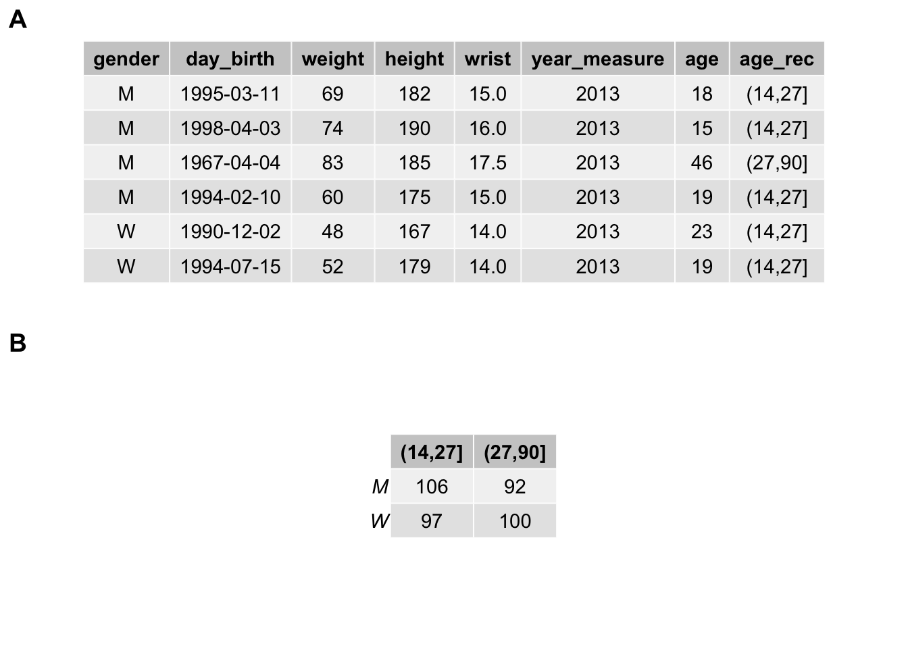

6.1 Tableaux de données
Les tableaux de données sont principalement représentés sous deux formes : les tableaux cas par variables et les tableaux de contingence.
6.1.1 Tableaux cas par variables
Chaque individus est représenté en ligne et chaque variable en colonne par convention. En anglais, on parlera de tidy data.
Nous nous efforcerons de toujours créer un tableau de ce type pour les données brutes. La question à se poser est la suivante : est-ce que j’ai un seul et même individu représenté sur chaque ligne du tableau ? Si la réponse est non, le tableau de données n’est pas correctement encodé.
TODO : exemple et solution
Les tableaux de données que vous avez traités jusqu’à présent étaient tous des tableaux cas par variables. Chaque ligne représentait un individu sur qui une ou plusieurs variables (en colonnes) étaient mesurées.
biometry <- read("biometry", package = "BioDataScience", lang = "fr")
head(biometry)# # A tibble: 6 x 7
# gender day_birth weight height wrist year_measure age
# <fct> <date> <dbl> <dbl> <dbl> <dbl> <dbl>
# 1 M 1995-03-11 69 182 15 2013 18
# 2 M 1998-04-03 74 190 16 2013 15
# 3 M 1967-04-04 83 185 17.5 2013 46
# 4 M 1994-02-10 60 175 15 2013 19
# 5 W 1990-12-02 48 167 14 2013 23
# 6 W 1994-07-15 52 179 14 2013 19L’encodage d’un petit tableau cas par variables directement dans R est facile. Cela peut se faire de plusieurs façons différentes. En voici deux utilisant les fonctions tibble() (spécification colonne par colonne, utilisez le snippet .dmtibble pour vous aider) et tribble() (spécification ligne par ligne, utilisez le snippet .dmtribble) :
# Spécification colonne par colonne avec tibble()
(df <- as_dataframe(tibble(
x = c(1, 2),
y = c(3, 4)
)))# # A tibble: 2 x 2
# x y
# <dbl> <dbl>
# 1 1 3
# 2 2 4# Spécification ligne par ligne avec tribble()
(df1 <- as_dataframe(tribble(
~x, ~y,
1, 3,
2, 4
)))# # A tibble: 2 x 2
# x y
# <dbl> <dbl>
# 1 1 3
# 2 2 4La seconde approche est plus naturelle, mais la première permet d’utiliser diverses fonctions de R pour faciliter l’encodage, par exemple :
- Séquence d’entiers successifs :
1:10# [1] 1 2 3 4 5 6 7 8 9 10- Répétition d’un vecteur 5 fois :
rep(c("a", "b", "c"), 5)# [1] "a" "b" "c" "a" "b" "c" "a" "b" "c" "a" "b" "c" "a" "b" "c"- Répétition de chaque item d’un vecteur 5 fois :
rep(c("a", "b", "c"), each = 5)# [1] "a" "a" "a" "a" "a" "b" "b" "b" "b" "b" "c" "c" "c" "c" "c"Pour de plus gros tableaux, il vaut mieux utiliser un tableur tel que Excel ou LibreOffice Calc pour l’encodage. Les tableurs en ligne comme Google Sheets ou Excel Online conviennent très bien également et facilitent un travail collaboratif ainsi que la mise à disposition sut le Net, comme nous avons vu au module 5.
6.1.2 Tableaux de contingence
C’est le dénombrement de l’occurrence de chaque niveau d’une (tableau à une entrée) ou de deux variables qualitatives (tableau à double entrée). La fonction table() crée ces deux types de tableaux de contingence à partir de données encodées en tableau cas par variables :
biometry$age_rec <- cut(biometry$age, include.lowest = FALSE, right = TRUE,
breaks = c(14, 27, 90))
(bio_tab <- table(biometry$gender, biometry$age_rec))#
# (14,27] (27,90]
# M 106 92
# W 97 100Le tableau de contingence peut toujours être calculé à partir d’un tableau cas par variable, mais il peut également être encodé directement si nécessaire. Voici un petit tableau de contingence à simple entrée encodé directement comme tel (vecteur nommé transformé en objet table à l’aide de la fonction as.table()) :
anthirrhinum <- as.table(c(
"fleur rouge" = 54,
"fleur rose" = 122,
"fleur blanche" = 58)
)
anthirrhinum# fleur rouge fleur rose fleur blanche
# 54 122 58Une troisième possibilité est d’utiliser un tableau indiquant les fréquences d’occurence dans une colonne (freq ci-dessus). Ce n’est pas un tableau cas par variable, mais une forme bien plus concise et pratique pour pré-encoder les données qui devront être ensuite transformées en tableau de contingence à l’aide de la fonction xtabs(). Voici un exemple pour un tableau de contingence à double entrée. Notez que le tableau cas par variable correspondant devrait contenir 44 + 116 + 19 + 128 = 307 lignes et serait plus fastidieux à construire et à manipuler (même en utilisant la fonction rep()).
timolol <- tibble(
traitement = c("timolol", "timolol", "placebo", "placebo"),
patient = c("sain", "malade", "sain", "malade"),
freq = c(44, 116, 19, 128)
)
# Creation du tableau de contingence
timolol_table <- xtabs(data = timolol, freq ~ patient + traitement)
timolol_table# traitement
# patient placebo timolol
# malade 128 116
# sain 19 44La sortie par défaut d’un tableau de contingence n’est pas très esthétique, mais plusieurs options existent pour le formater d’une façon agréable. En voici deux exemples :
pander::pander(timolol_table,
caption = "Exemple de table de contingence à double entrée.")| placebo | timolol | |
|---|---|---|
| malade | 128 | 116 |
| sain | 19 | 44 |
knitr::kable(timolol_table,
caption = "Exemple de table de contingence à double entrée.")| placebo | timolol | |
|---|---|---|
| malade | 128 | 116 |
| sain | 19 | 44 |
Il est même possible de représenter graphiquement un tableau de contingence pour l’inclure dans une figure composée, éventuellement en le mélangeant avec des graphiques25.
tab1 <- ggpubr::ggtexttable(head(biometry), rows = NULL)
tab2 <- ggpubr::ggtexttable(table(biometry$gender, biometry$age_rec))
combine_charts(list(tab1, tab2), nrow = 2)
Différentes fonctions dans R existent également pour convertir un tableau de contingence en tableau cas par variables (ou en tous cas, en un tableau similaire). Par exemple, as_dataframe() renvoie un tableau indiquant les fréquences d’occurrences :
(timolol2 <- as_dataframe(timolol_table, n = "freq"))# # A tibble: 4 x 3
# patient traitement freq
# <chr> <chr> <dbl>
# 1 malade placebo 128
# 2 sain placebo 19
# 3 malade timolol 116
# 4 sain timolol 44Si vous insistez, vous pouvez aussi obtenir un tableau cas par variables (mais celui-ci est très long et peu pratique à manipuler) à l’aide de la fonction uncount()26 :
uncount(timolol2, freq)# # A tibble: 307 x 2
# patient traitement
# <chr> <chr>
# 1 malade placebo
# 2 malade placebo
# 3 malade placebo
# 4 malade placebo
# 5 malade placebo
# 6 malade placebo
# 7 malade placebo
# 8 malade placebo
# 9 malade placebo
# 10 malade placebo
# # … with 297 more rows6.1.3 Métadonnées
Les données dans un tableau de données doivent impérativement être associées à un ensemble de métadonnées. Les métadonnées (“metadata” en anglais) apportent des informations complémentaires nécessaires pour une interprétation correcte des données. Elles permettent donc de replacer les données dans leur contexte et de spécifier des caractéristiques liées aux mesures réalisées comme les unités de mesure par exemple.
\[Donn\acute{e}es \ de \ qualit\acute{e} \ = \ tableau \ de \ donn\acute{e}es + \ m\acute{e}tadonn\acute{e}es\]
Les données correctement qualifiées et documentée sont les seules qui peuvent être utilisées par un collaborateur externe. C’est à dire qu’une personne externe à l’expérience ne peut interpréter le tableau de données que si les métadonnées sont complètes et explicites.
Exemple de métadonnées :
- Unités de mesure (exemple : 3,5 mL, 21,2 °C)
- Précision de la mesure (21,2 +/- 0,2 dans le cas d’un thermomètre gradué tous les 0,2 °C)
- Méthode de mesure utilisée (thermomètre à mercure, ou électronique, ou …)
- Type d’instrument employé (marque et modèle du thermomètre par exemple)
- Date de la mesure
- Nom du projet lié à la prise de mesure
- Nom de l’opérateur en charge de la mesure
- …
Vous avez pu vous apercevoir que la fonction read() permet d’ajouter certaines métadonnées comme les unités aux variables d’un jeu de données. Cependant, il n’est pas toujours possible de rajouter les métadonnées dans un tableau sous forme électronique, mais il faut toujours les consigner dans un cahier de laboratoire, et ensuite les retranscrire dans le rapport. La fonction labelise() vous permet de rajouter le label et les unités de mesure pour vos différentes variables directement dans le tableau. Par exemple, voici l’encodage direct d’un petit jeu de données qui mesure la distance du saut (jump) en cm de grenouilles taureaux en fonction de leur masse (weight) en g pour 5 individus différents (ind). Vous pouvez annoter ce data frame de la façon suivante :
frog <- tribble(
~ind, ~jump, ~weight,
1, 71, 204,
2, 70, 240,
3, 100, 296,
4, 120, 303,
5, 103, 422
)
# Ajout des labels et des unités
frog <- labelise(frog, self = FALSE,
label = list(
ind = "Individu",
jump = "Distance du saut",
weight = "Masse"),
units = list(
jump = "cm",
weight = "g")
)
# Affichage synthétique des données et métadonnées associées
str(frog)# Classes 'tbl_df', 'tbl' and 'data.frame': 5 obs. of 3 variables:
# $ ind : num 1 2 3 4 5
# ..- attr(*, "label")= chr "Individu"
# $ jump : num 71 70 100 120 103
# ..- attr(*, "label")= chr "Distance du saut"
# ..- attr(*, "units")= chr "cm"
# $ weight: num 204 240 296 303 422
# ..- attr(*, "label")= chr "Masse"
# ..- attr(*, "units")= chr "g"# Affichage des labels
label(frog)# ind jump weight
# "Individu" "Distance du saut" "Masse"Les métadonnées sont enregistrées dans des attributs en R (attr). De même, comment() permet d’associer ou de récupérer un attribut commentaire :
# Ajout d'un commentaire concernant le jeu de données lui-même
comment(frog) <- "Saut de grenouilles taureaux"
# Ajout d'un commentaire sur une variable
comment(frog$jump) <- "Premier saut mesuré après stimulation de l'animal"
# Affichage synthétique
str(frog)# Classes 'tbl_df', 'tbl' and 'data.frame': 5 obs. of 3 variables:
# $ ind : num 1 2 3 4 5
# ..- attr(*, "label")= chr "Individu"
# $ jump : num 71 70 100 120 103
# ..- attr(*, "label")= chr "Distance du saut"
# ..- attr(*, "units")= chr "cm"
# ..- attr(*, "comment")= chr "Premier saut mesuré après stimulation de l'animal"
# $ weight: num 204 240 296 303 422
# ..- attr(*, "label")= chr "Masse"
# ..- attr(*, "units")= chr "g"
# - attr(*, "comment")= chr "Saut de grenouilles taureaux"# Récupération des commentaires
comment(frog)# [1] "Saut de grenouilles taureaux"comment(frog$jump)# [1] "Premier saut mesuré après stimulation de l'animal"comment(frog$weight) # Rien!# NULL6.1.4 Dictionnaire des données
Le dictionnaire des données est un élément important de la constitution d’une base de données. Il s’agit d’un tableau annexe qui reprend le nom de chaque variable, son label (nom plus long et explicite), son type (numérique, facteur, facteur ordonné, date, …), la taille (de moindre importance pour nous), et un commentaire éventuel. Dans notre contexte, il est également utile de renseigner les unités de mesure, et la façon dont les données manquantes sont encodées. Cela donne donc un tableau du genre :
| Variable | Label | Unités | Type | Val. manquantes | Commentaire |
|---|---|---|---|---|---|
| date | Date | - | Date | NA | Date de mesure |
| age | Âge | années | numeric | -1 | |
| diameter | Diamètre du test | mm | numeric | NA | Moyenne de deux diamètres perpendiculaires |
| origin | Origine | - | factor | unknown | “Fishery” = oursins sauvages, “Farm” = oursins d’élevage |
Ce tableau peut-être encodé sous forme textuelle et placé dans le même dossier que le jeu de données lui-même. Il peut aussi être encodé comme feuille supplémentaire dans une fichier Excel.
Le dictionnaire des données est un outil important pour comprendre ce que contient le tableau de données, et donc, son interprétation. Ne le négligez pas !